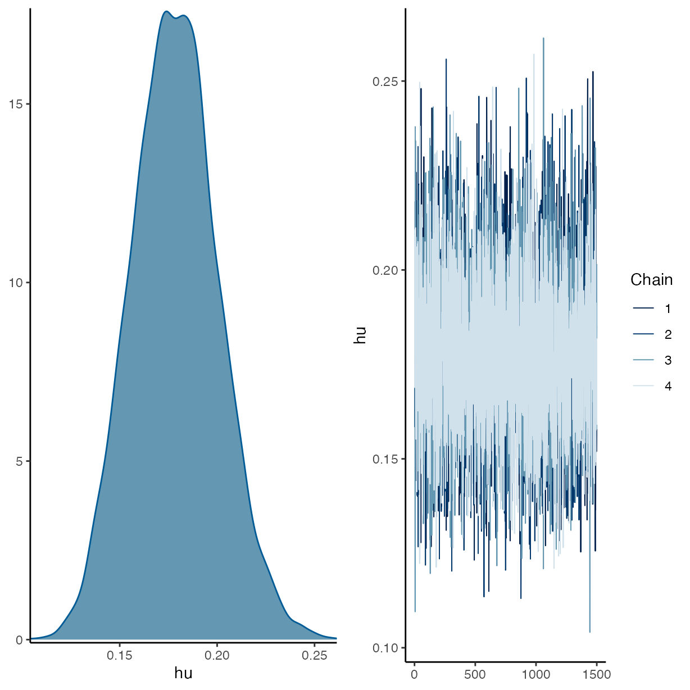
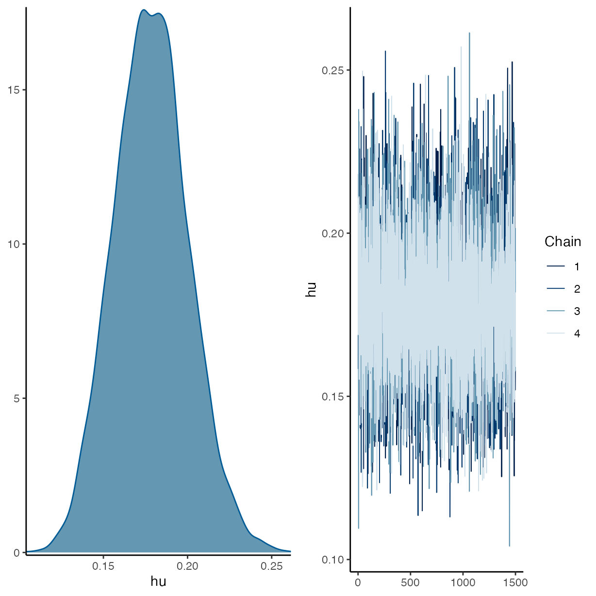
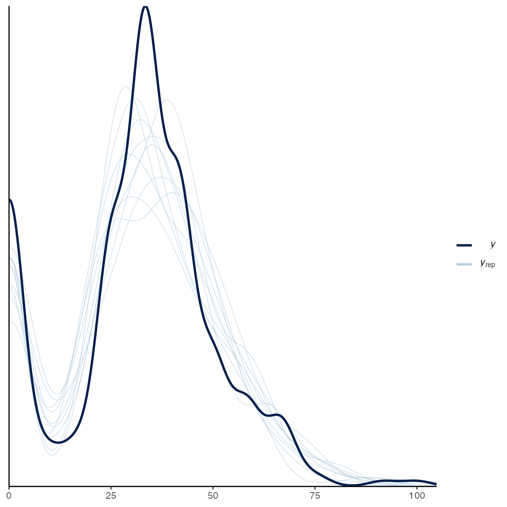
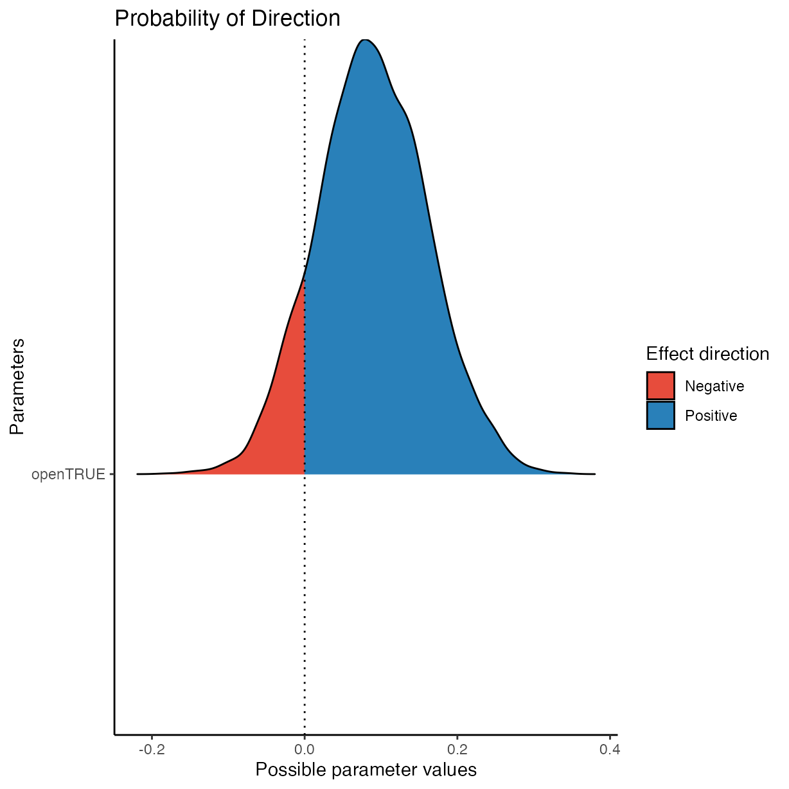

Analysis of Open Access Policy
Adam H. Sparks
2021-06-22
Source:vignettes/j_analysis_access_policy.Rmd
j_analysis_access_policy.RmdThis vignette documents a simple visualisation and tabulation of the data gathered from surveying 21 journals and 300 articles in the field of plant pathology for their openness and reproducibility.
Set-up Workspace
Load libraries used and setting the ggplot2 theme for the document.
library("brms")
#> Loading required package: Rcpp
#> Loading 'brms' package (version 2.15.0). Useful instructions
#> can be found by typing help('brms'). A more detailed introduction
#> to the package is available through vignette('brms_overview').
#>
#> Attaching package: 'brms'
#> The following object is masked from 'package:stats':
#>
#> ar
library("bayestestR")
library("bayesplot")
#> This is bayesplot version 1.8.1
#> - Online documentation and vignettes at mc-stan.org/bayesplot
#> - bayesplot theme set to bayesplot::theme_default()
#> * Does _not_ affect other ggplot2 plots
#> * See ?bayesplot_theme_set for details on theme setting
library("ggplot2")
library("pander")
library("Reproducibility.in.Plant.Pathology")
options(mc.cores = parallel::detectCores())
theme_set(theme_classic())Import Data
Data are imported and the base level is set to Molecular Plant Pathology, the journal with the highest five-year impact factor that will be used as the intercept in the following models.
rrpp <- import_notes()Notes
All models are using the same priors. Because of the amount of zero values in the reproducibility_score a hurdle_gamma() family is used for all models as well.
Journal Open Access Policy Model
Test the effect that journal’s open access policy had on the reproducibility score. Here, open is a fixed effect, year and assignee are assigned as random effects.
m5 <-
brm(
formula = reproducibility_score ~ open + (1 | year) + (1 | assignee),
data = rrpp,
seed = 27,
prior = priors,
family = hurdle_gamma(),
control = list(adapt_delta = 0.999999),
iter = 3000,
chains = 4
)
#> Compiling Stan program...
#> Start sampling
summary(m5)
#> Family: hurdle_gamma
#> Links: mu = log; shape = identity; hu = identity
#> Formula: reproducibility_score ~ open + (1 | year) + (1 | assignee)
#> Data: rrpp (Number of observations: 300)
#> Samples: 4 chains, each with iter = 3000; warmup = 1500; thin = 1;
#> total post-warmup samples = 6000
#>
#> Group-Level Effects:
#> ~assignee (Number of levels: 4)
#> Estimate Est.Error l-95% CI u-95% CI Rhat Bulk_ESS Tail_ESS
#> sd(Intercept) 0.21 0.20 0.04 0.77 1.00 1465 1776
#>
#> ~year (Number of levels: 7)
#> Estimate Est.Error l-95% CI u-95% CI Rhat Bulk_ESS Tail_ESS
#> sd(Intercept) 0.11 0.06 0.03 0.26 1.00 1955 2397
#>
#> Population-Level Effects:
#> Estimate Est.Error l-95% CI u-95% CI Rhat Bulk_ESS Tail_ESS
#> Intercept 3.63 0.15 3.35 3.93 1.00 2027 1694
#> openTRUE 0.09 0.07 -0.05 0.23 1.00 5889 3969
#>
#> Family Specific Parameters:
#> Estimate Est.Error l-95% CI u-95% CI Rhat Bulk_ESS Tail_ESS
#> shape 7.86 0.72 6.57 9.35 1.00 5700 4352
#> hu 0.18 0.02 0.14 0.22 1.00 6671 4170
#>
#> Samples were drawn using sampling(NUTS). For each parameter, Bulk_ESS
#> and Tail_ESS are effective sample size measures, and Rhat is the potential
#> scale reduction factor on split chains (at convergence, Rhat = 1).
plot(m5) 

pp_check(m5)
#> Using 10 posterior samples for ppc type 'dens_overlay' by default.

pander(equivalence_test(m5))
#> Warning: Could not estimate a good default ROPE range. Using 'c(-0.1, 0.1)'.| Parameter | CI | ROPE_low | ROPE_high | ROPE_Percentage | ROPE_Equivalence |
|---|---|---|---|---|---|
| b_Intercept | 0.95 | -0.1 | 0.1 | 0 | Rejected |
| b_openTRUE | 0.95 | -0.1 | 0.1 | 0.5766 | Undecided |
| HDI_low | HDI_high | Effects | Component |
|---|---|---|---|
| 3.343 | 3.918 | fixed | conditional |
| -0.05392 | 0.2277 | fixed | conditional |
Colophon
sessioninfo::session_info()
#> ─ Session info ───────────────────────────────────────────────────────────────
#> setting value
#> version R version 4.1.0 (2021-05-18)
#> os macOS Big Sur 11.4
#> system aarch64, darwin20
#> ui X11
#> language (EN)
#> collate en_AU.UTF-8
#> ctype en_AU.UTF-8
#> tz Australia/Perth
#> date 2021-06-22
#>
#> ─ Packages ───────────────────────────────────────────────────────────────────
#> package * version date lib
#> abind 1.4-5 2016-07-21 [2]
#> assertthat 0.2.1 2019-03-21 [2]
#> backports 1.2.1 2020-12-09 [2]
#> base64enc 0.1-3 2015-07-28 [2]
#> bayesplot * 1.8.1 2021-06-14 [2]
#> bayestestR * 0.10.0 2021-05-31 [2]
#> boot 1.3-28 2021-05-03 [3]
#> bridgesampling 1.1-2 2021-04-16 [2]
#> brms * 2.15.0 2021-03-14 [2]
#> Brobdingnag 1.2-6 2018-08-13 [2]
#> bslib 0.2.5.1 2021-05-18 [2]
#> cachem 1.0.5 2021-05-15 [2]
#> callr 3.7.0 2021-04-20 [2]
#> cli 2.5.0 2021-04-26 [2]
#> coda 0.19-4 2020-09-30 [2]
#> codetools 0.2-18 2020-11-04 [3]
#> colorspace 2.0-1 2021-05-04 [2]
#> colourpicker 1.1.0 2020-09-14 [2]
#> crayon 1.4.1 2021-02-08 [2]
#> crosstalk 1.1.1 2021-01-12 [2]
#> curl 4.3.1 2021-04-30 [2]
#> DBI 1.1.1 2021-01-15 [2]
#> desc 1.3.0 2021-03-05 [2]
#> digest 0.6.27 2020-10-24 [2]
#> dplyr 1.0.7 2021-06-18 [2]
#> DT 0.18 2021-04-14 [2]
#> dygraphs 1.1.1.6 2018-07-11 [2]
#> effectsize 0.4.5 2021-05-25 [2]
#> ellipsis 0.3.2 2021-04-29 [2]
#> emmeans 1.6.1 2021-06-01 [2]
#> estimability 1.3 2018-02-11 [2]
#> evaluate 0.14 2019-05-28 [2]
#> fansi 0.5.0 2021-05-25 [2]
#> farver 2.1.0 2021-02-28 [2]
#> fastmap 1.1.0 2021-01-25 [2]
#> fs 1.5.0 2020-07-31 [2]
#> gamm4 0.2-6 2020-04-03 [2]
#> generics 0.1.0 2020-10-31 [2]
#> ggplot2 * 3.3.4 2021-06-16 [2]
#> ggridges 0.5.3 2021-01-08 [2]
#> glue 1.4.2 2020-08-27 [2]
#> gridExtra 2.3 2017-09-09 [2]
#> gtable 0.3.0 2019-03-25 [2]
#> gtools 3.9.2 2021-06-06 [2]
#> highr 0.9 2021-04-16 [2]
#> hms 1.1.0 2021-05-17 [2]
#> htmltools 0.5.1.1 2021-01-22 [2]
#> htmlwidgets 1.5.3 2020-12-10 [2]
#> httpuv 1.6.1 2021-05-07 [2]
#> igraph 1.2.6 2020-10-06 [2]
#> inline 0.3.19 2021-05-31 [2]
#> insight 0.14.1 2021-05-28 [2]
#> jquerylib 0.1.4 2021-04-26 [2]
#> jsonlite 1.7.2 2020-12-09 [2]
#> knitr 1.33 2021-04-24 [2]
#> labeling 0.4.2 2020-10-20 [2]
#> later 1.2.0 2021-04-23 [2]
#> lattice 0.20-44 2021-05-02 [3]
#> lifecycle 1.0.0 2021-02-15 [2]
#> lme4 1.1-27 2021-05-15 [2]
#> loo 2.4.1 2020-12-09 [2]
#> magrittr 2.0.1 2020-11-17 [2]
#> markdown 1.1 2019-08-07 [2]
#> MASS 7.3-54 2021-05-03 [3]
#> Matrix 1.3-3 2021-05-04 [3]
#> matrixStats 0.59.0 2021-06-01 [2]
#> memoise 2.0.0 2021-01-26 [2]
#> mgcv 1.8-35 2021-04-18 [3]
#> mime 0.10 2021-02-13 [2]
#> miniUI 0.1.1.1 2018-05-18 [2]
#> minqa 1.2.4 2014-10-09 [2]
#> multcomp 1.4-17 2021-04-29 [3]
#> munsell 0.5.0 2018-06-12 [2]
#> mvtnorm 1.1-2 2021-06-07 [2]
#> nlme 3.1-152 2021-02-04 [3]
#> nloptr 1.2.2.2 2020-07-02 [2]
#> pander * 0.6.4 2021-06-13 [2]
#> parameters 0.14.0 2021-05-29 [2]
#> pillar 1.6.1 2021-05-16 [2]
#> pkgbuild 1.2.0 2020-12-15 [2]
#> pkgconfig 2.0.3 2019-09-22 [2]
#> pkgdown 1.6.1 2020-09-12 [2]
#> plyr 1.8.6 2020-03-03 [2]
#> prettyunits 1.1.1 2020-01-24 [2]
#> processx 3.5.2 2021-04-30 [2]
#> projpred 2.0.2 2020-10-28 [2]
#> promises 1.2.0.1 2021-02-11 [2]
#> ps 1.6.0 2021-02-28 [2]
#> purrr 0.3.4 2020-04-17 [2]
#> R6 2.5.0 2020-10-28 [2]
#> ragg 1.1.3 2021-06-09 [2]
#> Rcpp * 1.0.6 2021-01-15 [2]
#> RcppParallel 5.1.4 2021-05-04 [2]
#> readODS 1.7.0 2020-07-10 [2]
#> readr 1.4.0 2020-10-05 [2]
#> Reproducibility.in.Plant.Pathology * 0.0.1-2 2021-06-22 [1]
#> reshape2 1.4.4 2020-04-09 [2]
#> rlang 0.4.11 2021-04-30 [2]
#> rmarkdown 2.9 2021-06-15 [2]
#> rprojroot 2.0.2 2020-11-15 [2]
#> rsconnect 0.8.18 2021-05-24 [2]
#> rstan 2.21.2 2020-07-27 [2]
#> rstantools 2.1.1 2020-07-06 [2]
#> rstudioapi 0.13 2020-11-12 [2]
#> sandwich 3.0-1 2021-05-18 [3]
#> sass 0.4.0.9000 2021-05-27 [2]
#> scales 1.1.1 2020-05-11 [2]
#> see 0.6.4 2021-05-29 [2]
#> sessioninfo 1.1.1 2018-11-05 [2]
#> shiny 1.6.0 2021-01-25 [2]
#> shinyjs 2.0.0 2020-09-09 [2]
#> shinystan 2.5.0 2018-05-01 [2]
#> shinythemes 1.2.0 2021-01-25 [2]
#> StanHeaders 2.21.0-7 2020-12-17 [2]
#> stringi 1.6.2 2021-05-17 [2]
#> stringr 1.4.0 2019-02-10 [2]
#> survival 3.2-11 2021-04-26 [3]
#> systemfonts 1.0.2 2021-05-11 [2]
#> textshaping 0.3.5 2021-06-09 [2]
#> TH.data 1.0-10 2019-01-21 [3]
#> threejs 0.3.3 2020-01-21 [2]
#> tibble 3.1.2 2021-05-16 [2]
#> tidyselect 1.1.1 2021-04-30 [2]
#> utf8 1.2.1 2021-03-12 [2]
#> V8 3.4.2 2021-05-01 [2]
#> vctrs 0.3.8 2021-04-29 [2]
#> withr 2.4.2 2021-04-18 [2]
#> xfun 0.24 2021-06-15 [2]
#> xml2 1.3.2 2020-04-23 [2]
#> xtable 1.8-4 2019-04-21 [2]
#> xts 0.12.1 2020-09-09 [2]
#> yaml 2.2.1 2020-02-01 [2]
#> zoo 1.8-9 2021-03-09 [2]
#> source
#> CRAN (R 4.1.0)
#> CRAN (R 4.1.0)
#> CRAN (R 4.1.0)
#> CRAN (R 4.1.0)
#> CRAN (R 4.1.0)
#> CRAN (R 4.1.0)
#> CRAN (R 4.1.0)
#> CRAN (R 4.1.0)
#> CRAN (R 4.1.0)
#> CRAN (R 4.1.0)
#> CRAN (R 4.1.0)
#> CRAN (R 4.1.0)
#> CRAN (R 4.1.0)
#> CRAN (R 4.1.0)
#> CRAN (R 4.1.0)
#> CRAN (R 4.1.0)
#> CRAN (R 4.1.0)
#> CRAN (R 4.1.0)
#> CRAN (R 4.1.0)
#> CRAN (R 4.1.0)
#> CRAN (R 4.1.0)
#> CRAN (R 4.1.0)
#> CRAN (R 4.1.0)
#> CRAN (R 4.1.0)
#> CRAN (R 4.1.0)
#> CRAN (R 4.1.0)
#> CRAN (R 4.1.0)
#> CRAN (R 4.1.0)
#> CRAN (R 4.1.0)
#> CRAN (R 4.1.0)
#> CRAN (R 4.1.0)
#> CRAN (R 4.1.0)
#> CRAN (R 4.1.0)
#> CRAN (R 4.1.0)
#> CRAN (R 4.1.0)
#> CRAN (R 4.1.0)
#> CRAN (R 4.1.0)
#> CRAN (R 4.1.0)
#> CRAN (R 4.1.0)
#> CRAN (R 4.1.0)
#> CRAN (R 4.1.0)
#> CRAN (R 4.1.0)
#> CRAN (R 4.1.0)
#> CRAN (R 4.1.0)
#> CRAN (R 4.1.0)
#> CRAN (R 4.1.0)
#> CRAN (R 4.1.0)
#> CRAN (R 4.1.0)
#> CRAN (R 4.1.0)
#> CRAN (R 4.1.0)
#> CRAN (R 4.1.0)
#> CRAN (R 4.1.0)
#> CRAN (R 4.1.0)
#> CRAN (R 4.1.0)
#> CRAN (R 4.1.0)
#> CRAN (R 4.1.0)
#> CRAN (R 4.1.0)
#> CRAN (R 4.1.0)
#> CRAN (R 4.1.0)
#> CRAN (R 4.1.0)
#> CRAN (R 4.1.0)
#> CRAN (R 4.1.0)
#> CRAN (R 4.1.0)
#> CRAN (R 4.1.0)
#> CRAN (R 4.1.0)
#> CRAN (R 4.1.0)
#> CRAN (R 4.1.0)
#> CRAN (R 4.1.0)
#> CRAN (R 4.1.0)
#> CRAN (R 4.1.0)
#> CRAN (R 4.1.0)
#> CRAN (R 4.1.0)
#> CRAN (R 4.1.0)
#> CRAN (R 4.1.0)
#> CRAN (R 4.1.0)
#> CRAN (R 4.1.0)
#> CRAN (R 4.1.0)
#> CRAN (R 4.1.0)
#> CRAN (R 4.1.0)
#> CRAN (R 4.1.0)
#> CRAN (R 4.1.0)
#> CRAN (R 4.1.0)
#> CRAN (R 4.1.0)
#> CRAN (R 4.1.0)
#> CRAN (R 4.1.0)
#> CRAN (R 4.1.0)
#> CRAN (R 4.1.0)
#> CRAN (R 4.1.0)
#> CRAN (R 4.1.0)
#> CRAN (R 4.1.0)
#> CRAN (R 4.1.0)
#> CRAN (R 4.1.0)
#> CRAN (R 4.1.0)
#> CRAN (R 4.1.0)
#> CRAN (R 4.1.0)
#> local
#> CRAN (R 4.1.0)
#> CRAN (R 4.1.0)
#> CRAN (R 4.1.0)
#> CRAN (R 4.1.0)
#> CRAN (R 4.1.0)
#> CRAN (R 4.1.0)
#> CRAN (R 4.1.0)
#> CRAN (R 4.1.0)
#> CRAN (R 4.1.0)
#> Github (rstudio/sass@f148415)
#> CRAN (R 4.1.0)
#> CRAN (R 4.1.0)
#> CRAN (R 4.1.0)
#> CRAN (R 4.1.0)
#> CRAN (R 4.1.0)
#> CRAN (R 4.1.0)
#> CRAN (R 4.1.0)
#> CRAN (R 4.1.0)
#> CRAN (R 4.1.0)
#> CRAN (R 4.1.0)
#> CRAN (R 4.1.0)
#> CRAN (R 4.1.0)
#> CRAN (R 4.1.0)
#> CRAN (R 4.1.0)
#> CRAN (R 4.1.0)
#> CRAN (R 4.1.0)
#> CRAN (R 4.1.0)
#> CRAN (R 4.1.0)
#> CRAN (R 4.1.0)
#> CRAN (R 4.1.0)
#> CRAN (R 4.1.0)
#> CRAN (R 4.1.0)
#> CRAN (R 4.1.0)
#> CRAN (R 4.1.0)
#> CRAN (R 4.1.0)
#> CRAN (R 4.1.0)
#> CRAN (R 4.1.0)
#>
#> [1] /private/var/folders/hc/tft3s5bn48gb81cs99mycyf00000gn/T/RtmpveS9nz/temp_libpath5734336332c3
#> [2] /Users/adamsparks/Library/R/4.1/library
#> [3] /Library/Frameworks/R.framework/Versions/4.1-arm64/Resources/library